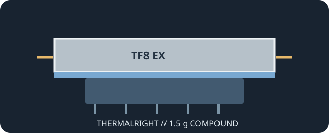

[ INDIVIDUAL COMPONENT // COOLING ]
Thermalright TF8 EX 1.5 g
1.5 g package of TF8 EX thermal compound, specified by Thermalright at 14 W/(m·K) and identified as electrically non-conductive.

IDENTIFICATION: The cataloged version is TF8 EX 1.5 g. Do not assume figures or package sizes apply to the earlier TF8 product or other Thermalright compounds.
Manufacturer specifications
| Catalog subcategory | Thermal Accessories |
|---|---|
| Exact model | Thermalright TF8 EX, 1.5 g |
| Material | Thermal compound; full formulation is not disclosed in the referenced product page. |
| Package / dimensions | 1.5 g net content; no syringe dimensions published by Thermalright. |
| Thermal conductivity | 14 W/(m·K), Thermalright rating. |
| Electrical properties | Thermalright describes TF8 EX as non-electrically conductive. |
| Additional maker ratings | Thermal impedance below 0.01 °C·cm²/W; specific gravity 2.9 at 25 °C; operating range −220 °C to +380 °C. |
Application & compatibility cautions
- Apply only as a thin contact layer between processor and cooler where paste is specified. Do not use the quoted W/(m·K) rating as a substitute for host compatibility information.
- Paste does not fill the larger, controlled gaps served by thermal pads or putty. Preserve original pad locations and thickness on graphics cards and boards.
- Use the product's installation guidance, disconnect power, and clean mating surfaces before reassembly.
Manufacturer sources
- Thermalright — TF8 EX 1.5 gModel identity and manufacturer-listed specifications.
- Thermalright — TF8 EX product familyManufacturer's TF8 EX model listing, including the 1.5 g package.
This static catalog entry is an identification aid, not a compatibility guarantee; use model-specific host service instructions.